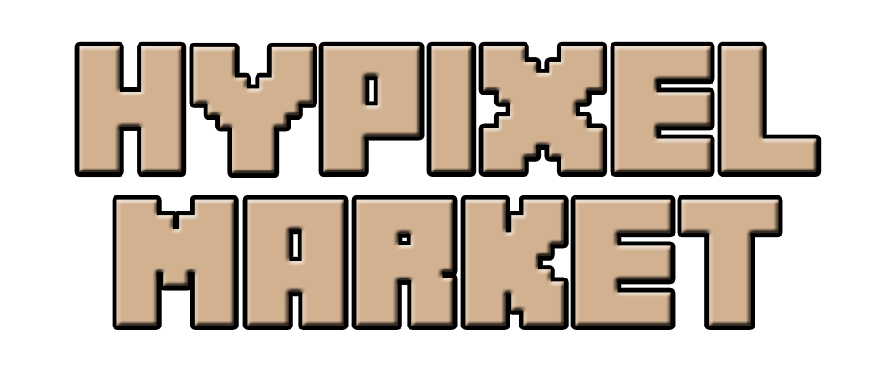

<mat-toolbar color="primary" class="mat-elevation-z5">
  <a routerLink="/" routerLinkActive="active">
  
  </a>
  <div class="spacer"></div>
  <a *ngIf="!login" routerLink="/login" routerLinkActive="active" mat-raised-button>Login</a>
  <a *ngIf="login" routerLink="/profile" routerLinkActive="active" mat-raised-button>Profile</a>
</mat-toolbar>
